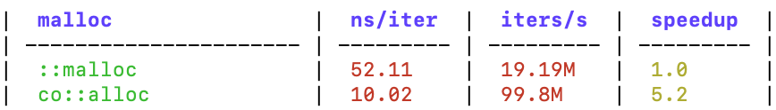

include: co/benchmark.h.
#基本概念
co.benchmark 是 v3.0.1 新增的基准测试框架，可用于性能基准测试。
#BM_group
#define BM_group(_name_) \
...... \
void _co_bm_group_##_name_(bm::xx::Group& _g_)
BM_group宏用于定义基准测试组，实际上定义了一个函数。- 每个 group 内可以用 BM_add 定义多条基准测试。
参数_name_是组名，也是所定义函数名的一部分，如BM_group(atomic)是合理的，而BM_group(co.atomic)则是不允许的。
#BM_add
#define BM_add(_name_) \
_g_.bm = #_name_; \
_BM_add
BM_add宏用于定义基准测试，它必须在 BM_group 定义的函数内使用。
参数_name_是基准测试名，与BM_group不同，BM_add(co.atomic)也是允许的。
#BM_use
#define BM_use(v) bm::xx::use(&v, sizeof(v))
BM_use宏告诉编译器变量v会被使用，防止编译器将一些测试代码优化掉。
#编写基准测试代码
#测试代码示例
#include "co/benchmark.h"
#include "co/mem.h"
BM_group(malloc) {
void* p;
BM_add(::malloc)(
p = ::malloc(32);
);
BM_use(p);
BM_add(co::alloc)(
p = co::alloc(32);
);
BM_use(p);
}
int main(int argc, char** argv) {
flag::parse(argc, argv);
bm::run_benchmarks();
return 0;
}
- 上面的代码定义了一个名为
malloc的基准测试组，组内用BM_add添加了 2 个基准测试。 - 调用
bm::run_benchmarks()，会执行所有的基准测试代码。
上例中，若无BM_use(p)，编译器可能认为p是未使用的变量，将相关的测试代码优化掉，导致无法测出准确的结果。
#测试结果示例

- 基准测试结果输出为 markdown 表格，可以轻松将测试结果复制到 markdown 文档中。
- 多个
BM_group会生成多个 markdown 表格。 - 表格第 1 列是 group 内的所有基准测试，第 2 列是单次迭代用时(单位为纳秒)，第 3 列是每秒迭代次数，第 4 列是性能提升倍数，以第一个基准测试为基准。